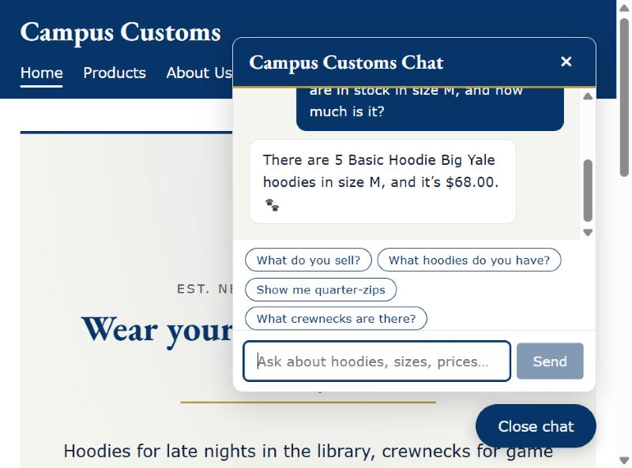
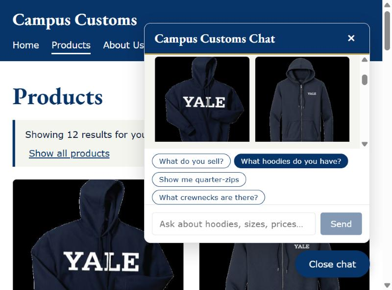
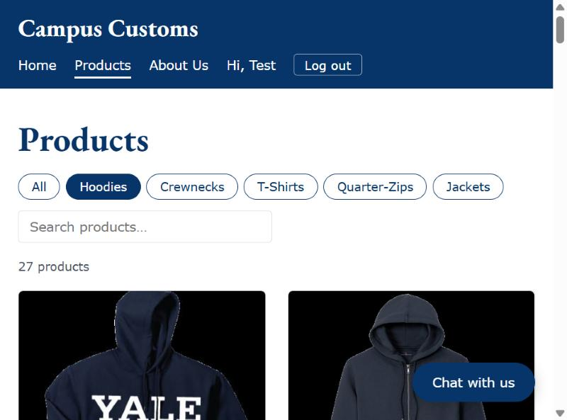

Live-site testing for Homework 4. Each check below has a heading, a screenshot from the
running app, and a note on what it proves. Screenshots live in
app_check_images/.

A shopper asked how many Basic Hoodie Big Yale are in stock in size M
and the price. The assistant answered 5 in size M and
$68.00 — both read from campus_customs.db by the agent's
tools, not guessed. This proves the chatbot gives honest stock and price from the
database.

Asking "What hoodies do you have?" made the agent search the catalogue and return structured matches. The matching hoodies appear as product cards in the chat panel and the main products grid updates ("Showing 12 results for your chat search"). This proves the chat-driven search renders real results on the page.

One of the Problem 9 usability improvements: the Products page has category buttons and a search box. Selecting Hoodies narrows the catalogue to 27 products, with a live count. This proves shoppers can filter and search the catalogue themselves.